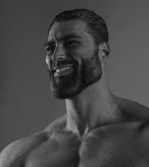

Well-known Memes
Introduction
In this page, we will explain in-depth where these memes orignated from, the current usage of the meme, possibly how it spread and about the meme.
The Rickroll
 One of the most famous YouTube memes, it was originally done by sending a user a hyperlink to Rick Astley's "Never Gonna Give You Up". This would make you "rickroll" them, although nowadays, it has been simplified to people hearing the song, seeing Rick's iconic dance inside the video, and/or seeing the video itself, when they don't expect a rickroll.
One of the most famous YouTube memes, it was originally done by sending a user a hyperlink to Rick Astley's "Never Gonna Give You Up". This would make you "rickroll" them, although nowadays, it has been simplified to people hearing the song, seeing Rick's iconic dance inside the video, and/or seeing the video itself, when they don't expect a rickroll.
Origin
Rick Astley's "Never Gonna Give You Up" was released on 1987 on his album Whenever You Need Somebody.
The YouTuber Erik Helwig claims to have rickrolled a Michigan radio station after a sports game by playing "Never Gonna Give You Up" over the phone. The story was then explained in a YouTube video on his channel titled "I Did the First Rickroll (w/ Proof)"
Usage on 4chan
The beginning of the rickroll began on the community 4chan as a spin-off of an earlier meme known as duckrolling, in which a link would be redirected to an edited image of a duck with wooden wheels, hence a duckroll. An example is shown below. According to 4chan founder m00t, the "rickroll" phenomenon began when someone posted a link to Rick Astley's music video disguised as a sneak preview for the newly released video game "Grand Theft Auto IV". Due to the high anticipation for the game at that time, many GTA fans fell victim to the rickroll and the joke became quite popular on 4chan. Search interests in "rickrolling" then began to rise between April and May 2007.
The Spread and "New" Rickroll
On May 15th, 2007, one of the earliest known instances of the rickroll video was uploaded under the title "Rickroll'D" by Cotter548.
Many people have expressed the opinion that the most attention-getting aspect of the video is Rick Astley's unexpectedly deep voice contrasting his youthful looks. According to VH1's PopUp Video, record executives who heard his recordings didn't believe it was his voice either at first. In February 2008, during when the Anonymous' Project Chanology protested against the Church of Scientology, "Never Gonna Give You Up" was played from all corners of the resistance. Newspapers called it “a live rick-rolling of the Church of Scientology", and on April 1st, 2008, every video on YouTube's recommended page redirected to the Rick Astley's "Never Gonna Give You Up".
In April 2008, a baseball team's site posted an online poll to select a song for the 8th inning sing-along. On April 4th, 2008, "FARK" users bombarded the poll with upvotes for Rick Astley's - "Never Gonna Give You Up." On April 7th, the baseball team announced that the song had won with over 5,000,000 votes. Rather than using the song for the 8th inning as they stated in the poll, it was used during the home opener instead, much to the displeasure of the baseball team's fans.
In November 2008, rickrolling came to a full circle when Astley himself appeared on a float during the "2008 Macy's Thanksgiving Day Parade", lip synching to his classic hit from 24 years ago, essentially rickrolling everyone in the parade.
A lot of things happened to make this rickroll meme relevant to the present day. A lot of other people also had their share in rickrolling people to embrace the meme.
On August 15th, 2022, the CSAA Insurance Group (also known as AAA) posted a remake of the original Rickroll video starring the Rick Astley today re-enacting the old dance moves as well as keeping the background shots from the original video in 1987. Astley wore the same costume he had in 1987, and danced on a similar set with a similar background, therefore creating the "New Rickroll", with the video having a few "easter eggs", like having a printer that prints Rickroll QR codes, a whiteboard that pays attention to the submeme:
Rick Astley will never:
- Give you up
- Let you down
- Run around
- Desert you
- Make you cry
- Say goodbye
- Tell a lie
- Hurt you
but instead replacing Rick Astley with InsurAAAnce.
Current Usage
In the current day, Rick Astley's "Never Gonna Give You Up" is still being used to rickroll people, except it has become easier these days. For a rickroll to be successful, either the people you are trying to rickroll:
- Reading the part "Never Gonna Give You Up"
- Hearing the song
- Watching Rick's dance at the start of the video/gif
- Watching the actual video itself
The "Gigachad"
 One of the most famous memes in YouTube Shorts, this meme depends on context. If it's used as a description, as in "You're a gigachad", it usually means that you are more "higher" than them when it comes to personality. Me, I'm being called "gigachad" for "study first; girlfriend later", since I have no girlfriend (yay). If its used in multiple pictures, it's more closer to the "Mr. Incredible becomes canny/uncanny." meme.
Origin
On October 15th, 2017, an anonymous person on "Reddit" published a link to the @sleekntears Instagram page in the "r/bodybuilding" subreddit. The post received more than 495 points (92% upvoted) and 100 comments in less than four years.
On October 17th, 2017, a photo of Ernest Khalimov was submitted to the "pol/" board on "4chan", which described him as "Gigachad. The perfect human specimen destined to lead us against the reptilians".
Spread
That same day, a post about Ernest Khalimov was submitted to the Lookism Forums, referring to him as "Ultra Chad." On October 24th, 2017, someone submitted a picture to Imgur: "It appears that The Gigachad is attempting to clone himself".
Current Usage
Now, people in YouTube are using "fat chad" and "giga chad" to compare whats godly and whats incredibly bad. The thing is, people who make these memes are kids, and they end up annoying half the community they put in the "non-chad section", usually people from game communities.
Example, if someone decides to put "Mobile Legends: Bang Bang" in the "fat chad section", Filipinos and other ML players would probably "get annoyed" at the person who made this, since "hating on a game you play" is one of the things gamers hate. Kids who also do this forget to put the more problematic games in front, but prioritize hated games by "feeling" rather than "toxicity"
The meme in YouTube Shorts uses a song Bring Me The Horizon - Can You Feel My Heart. The meme usually starts at "Can you hear the silence" with a "fat" version of the gigachad, then proceeds to put the "worthy" items in the comparison in the beat after "Can you feel, can you feel my heart". This part of the song uses the "manly" version of the Gigachad, with the items of comparison as part of the picture. Both parts of the song also work for the supposed Gigachad meme.
You can click here for an example of a "Gigachad" meme that is close to the "Mr Incredible becomes canny/uncanny" meme
Mainly, the people who create these memes prefer the old over the new, since they think the new ones are "cringe", though it's how people from Gen Z think, even though if they were kids, they wouldn't think of it as "cringe" until they grow up and realize. People also inject personal biases into this meme, example is this video, since they don't really have any reasons why its "not chad".